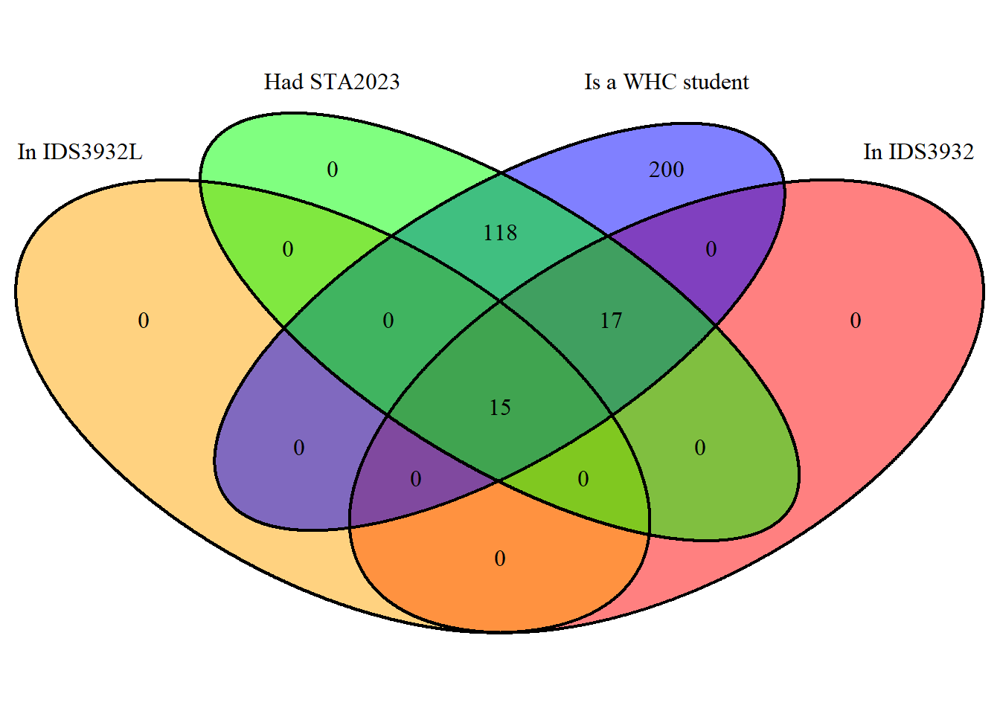

As noted in the syllabus, “STA 2023 (introductory stats) or equivalent or permission of instructor is a prerequisite for IDS 3932 (the seminar), enrollment in IDS 3932 is a corequisite for IDS 3932L (the lab), and enrollment in IDS 3932L is not a corequisite for IDS 3932.” These pre and corequisites may be described as a series of logical relationships.
Our first use of the programming language R is drawn directly from the syllabus. This document includes comments, code, and results, and was generated using the R markdown package, together with a supplemental package expressly written to produce Venn diagrams.
The document which generated this (prereqs.Rmd) and all code will be stored in the class github repository (https://github.com/kevinlanning/introDataScience). If you want to run this on your own computer, you will likely need to first install the Venndiagram package, that is, copy it on to your machine using the following command:
install.packages (“VennDiagram”)
## Loading required package: grid## Loading required package: futile.loggerdraw.quad.venn (
area1=15, # estimated n students in lab
area2=32,
area3=150,
area4=350,
n12=15,
n13=15,
n14=15,
n23=32,
n24=32,
n34=150,
n123=15,
n124=15,
n134=15,
n234=32,
n1234=15,
category = c("In IDS3932L",
"In IDS3932",
"Had STA2023",
"Is a WHC student"),
fill = c("orange",
"red",
"green",
"blue")
)
What do the numbers in the code above describe?
What do the zeros in the graph describe?
Do you think that this is a good graph? (Hint: I don’t)
What are its strengths and weaknesses?
How might you improve upon it?